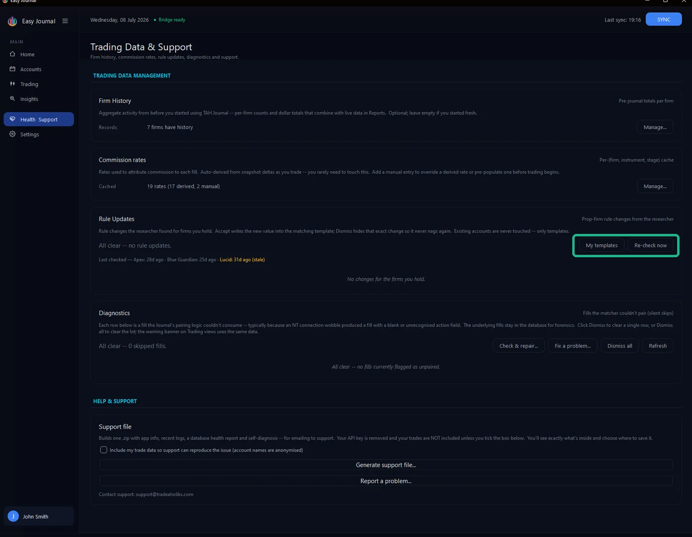
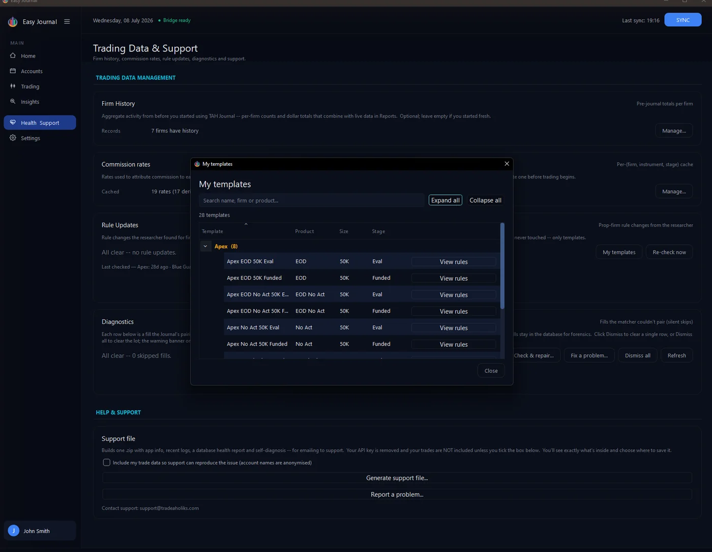

Where to find it 1. Open Health & Support in the left sidebar and find the Rule Updates card. It shows when each firm's rules were last checked and whether anything changed.

Your templates 2. Click My templates to review every rules template you have saved, grouped by firm. Templates are created from the Add Account and Change Stage windows (Save as template).

Checking for changes 3. Click Re-check now to compare your templates against the latest rule data the Journal has received. The card refreshes with a new checked time and the verdict:

A re-check - all clear, no rule changes for the firms held.
Only firms you hold an active account with are checked, so the card stays quiet unless something is relevant to you. When a change IS found, the card lists exactly what differs - old value against new. Accept writes the new value into the matching template so your next account is created under the current rules; dismissing hides that notice for good (the same value never nags twice). Every accepted change is logged - the field, old and new value, when it was accepted, and the source it came from - so you can always trace where a template's numbers originated. Stage matters too: an Eval rule change never lands on a Funded template, and different products at the same firm are kept separate. Tip: Firms usually apply rule changes to new accounts only - which is exactly how the Journal treats them: your running accounts are grandfathered, templates simply stay current for the next purchase.